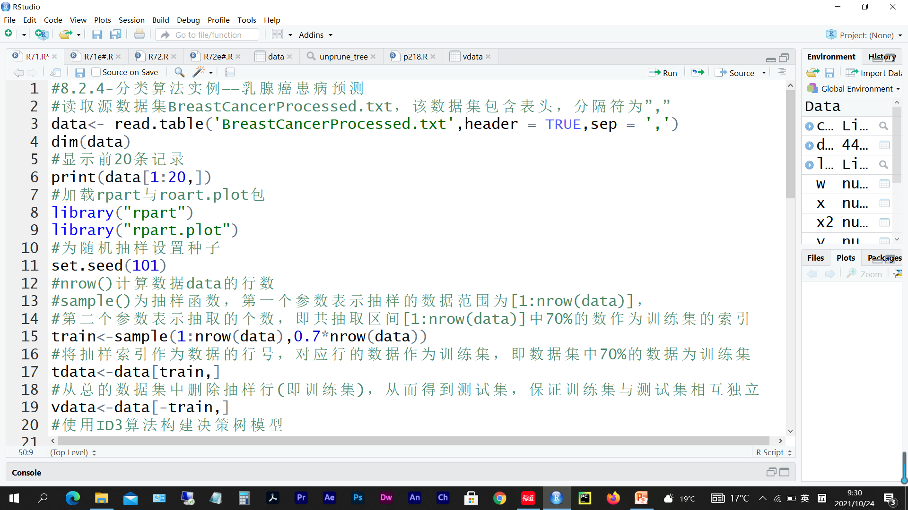
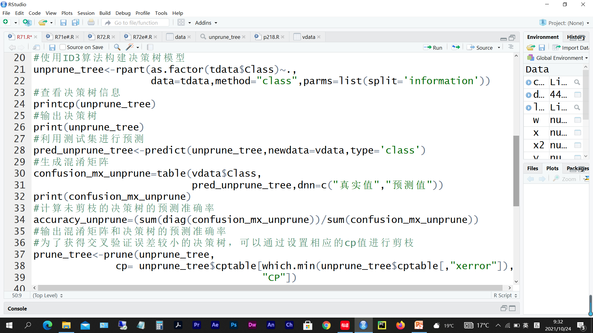
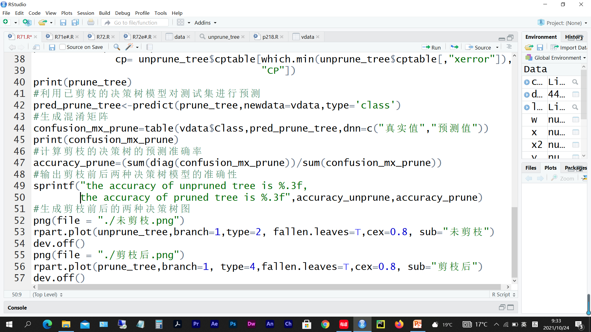
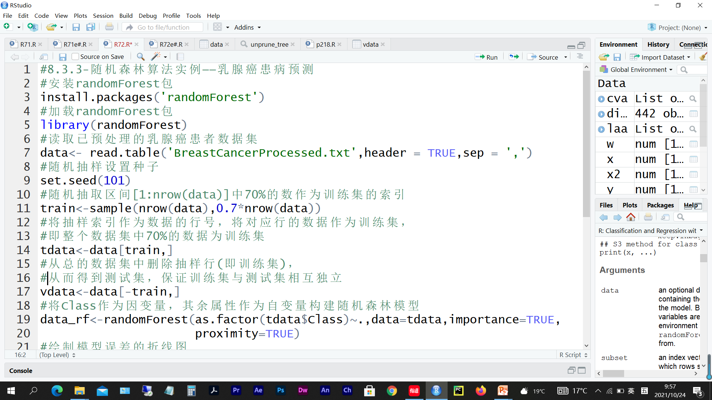
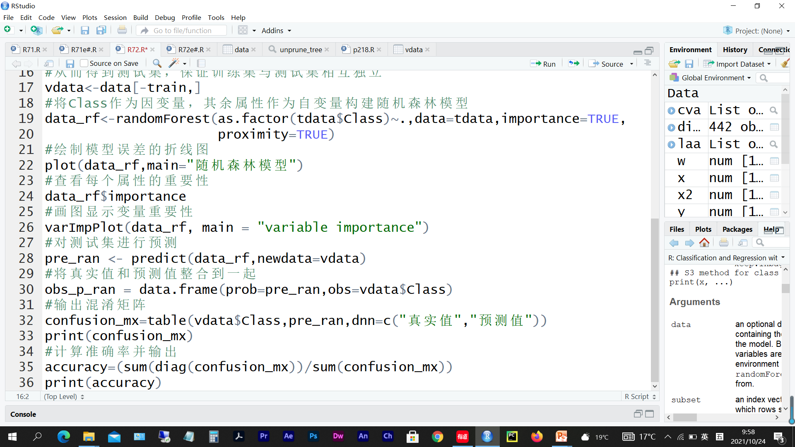
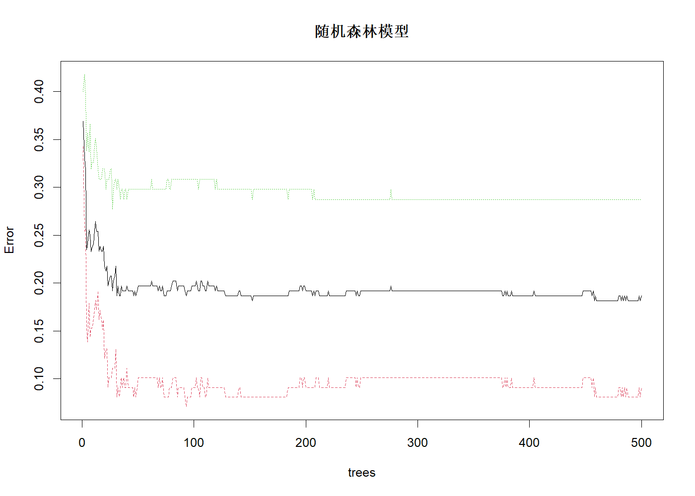
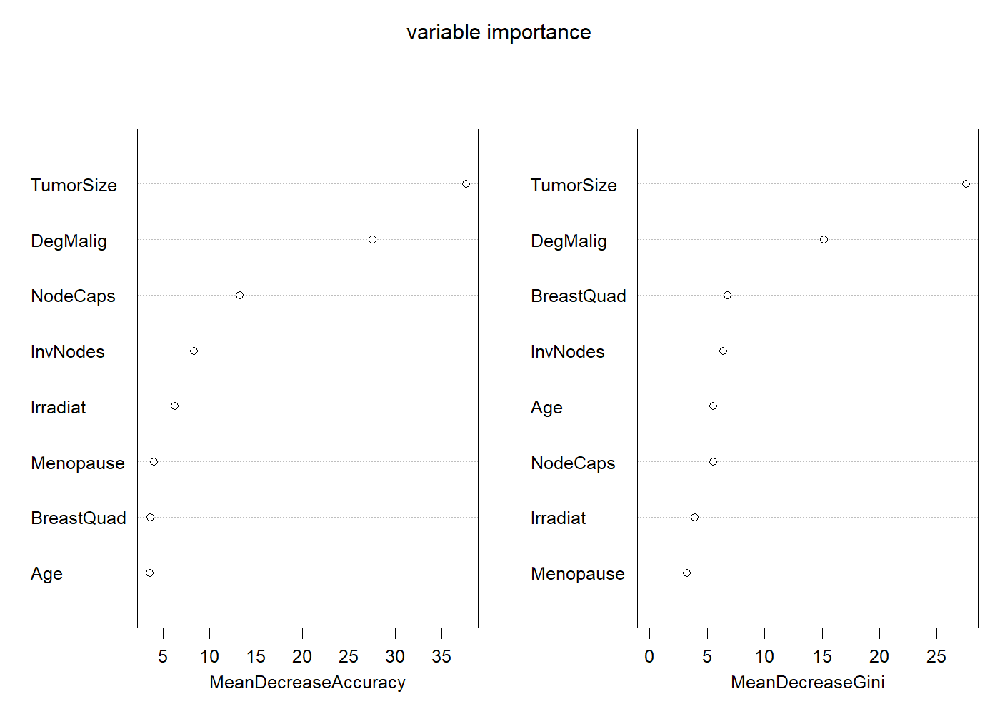
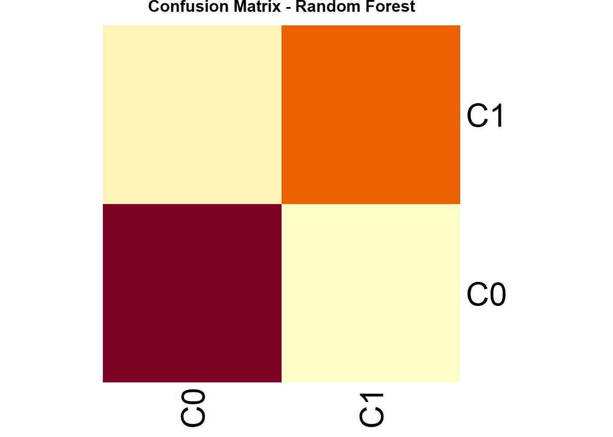

> 本文件由 `大数据实验5.pptx` 整理而成；
> 课件本身（.pptx）未收录进本仓库；文中的图片是幻灯片里原有的公式与数据表。



library(rpart)
library(rpart.plot)
data = read.table('BreastCancerProcessed.txt',header = T,sep = ',')
dim = (data)
print(data[1:20,])
set.seed(101)
train = sample(1:nrow(data),0.7*nrow(data))
tdata = data[train,]
vdata = data[-train,]
unprune_tree = rpart(as.factor(tdata$Class)~.,data = tdata,method = 'class',parms = list(split = 'information'))
printcp(unprune_tree)
print(unprune_tree)
pred_unprune_tree = predict(unprune_tree,newdata = vdata,type = 'class')
confusion_mx_unprune = table(vdata$Class,pred_unprune_tree,dnn = c('真实值','预测值'))
print(confusion_mx_unprune)
accuracy_unprune = (sum(diag(confusion_mx_unprune))/sum(confusion_mx_unprune))
prune_tree = prune(unprune_tree,cp = unprune_tree$cptable[which.min(unprune_tree$cptable[,'xerror']),'CP'])
print(prune_tree)
pred_unprune_tree = predict(prune_tree,newdata = vdata,type = 'class')
confusion_mx_unprune=table(vdata$Class,pred_unprune_tree,dnn = c('真实值','预测值'))
print(confusion_mx_unprune)
accuracy_prune = (sum(diag(confusion_mx_unprune))/sum(confusion_mx_unprune))
sprintf('the accuracy of unpruned tree is %.3f,the accuraty of pruned tree is %.3f',accuracy_unprune,accuracy_prune)
png(file = './未剪枝.png')
rpart.plot(unprune_tree,branch=1,type = 2,fallen.leaves = T,cex = 0.8,sub = '未剪枝')
dev.off()
png(file = './剪枝后.png')
rpart.plot(prune_tree,branch = 1,type = 4,fallen.leaves = T,cex = 0.8,sub = '剪枝后')
dev.off()
Age Menopause TumorSize InvNodes NodeCaps DegMalig BreastQuad Irradiat Class
1 A4 M3 T4 IN1 N1 D3 BQ1 IR0 C1
2 A5 M2 T4 IN1 N0 D1 BQ5 IR0 C0
3 A5 M2 T8 IN1 N0 D2 BQ2 IR0 C1
4 A4 M3 T8 IN1 N1 D3 BQ2 IR1 C1
5 A4 M3 T7 IN2 N1 D2 BQ3 IR0 C1
6 A5 M3 T6 IN2 N0 D2 BQ1 IR1 C0
7 A5 M2 T9 IN1 N0 D3 BQ1 IR0 C1
8 A4 M3 T3 IN1 N0 D2 BQ1 IR0 C0
9 A4 M3 T1 IN1 N0 D2 BQ4 IR0 C0
10 A4 M2 T9 IN6 N1 D2 BQ1 IR1 C1
11 A5 M3 T6 IN1 N0 D2 BQ2 IR0 C0
12 A6 M2 T4 IN1 N0 D2 BQ1 IR0 C0
13 A5 M2 T7 IN1 N0 D1 BQ5 IR0 C0
14 A5 M2 T6 IN1 N0 D2 BQ1 IR0 C0
15 A4 M3 T6 IN1 N0 D2 BQ2 IR1 C1
16 A3 M3 T5 IN1 N0 D3 BQ5 IR0 C0
17 A5 M3 T3 IN2 N0 D1 BQ1 IR0 C0
18 A6 M2 T4 IN1 N0 D2 BQ1 IR0 C0
19 A5 M3 T9 IN1 N0 D2 BQ1 IR0 C1
20 A5 M2 T5 IN1 N0 D3 BQ1 IR0 C0
Classification tree:
rpart(formula = as.factor(tdata$Class) ~ ., data = tdata, method = "class",
parms = list(split = "information"))
Variables actually used in tree construction:
[1] BreastQuad DegMalig NodeCaps TumorSize
Root node error: 94/193 = 0.48705
n= 193
CP nsplit rel error xerror xstd
1 0.563830 0 1.00000 1.18085 0.073057
2 0.085106 1 0.43617 0.44681 0.060983
3 0.026596 2 0.35106 0.38298 0.057570
4 0.014184 4 0.29787 0.37234 0.056945
5 0.010000 7 0.25532 0.37234 0.056945
n= 193
node), split, n, loss, yval, (yprob)
* denotes terminal node
1) root 193 94 C0 (0.5129534 0.4870466)
2) TumorSize=T1,T2,T3,T4,T5,T6 116 29 C0 (0.7500000 0.2500000)
4) DegMalig=D1 32 1 C0 (0.9687500 0.0312500) *
5) DegMalig=D2,D3 84 28 C0 (0.6666667 0.3333333)
10) NodeCaps=N0 69 18 C0 (0.7391304 0.2608696)
20) TumorSize=T2,T3 9 0 C0 (1.0000000 0.0000000) *
21) TumorSize=T1,T4,T5,T6 60 18 C0 (0.7000000 0.3000000)
42) BreastQuad=BQ1,BQ4,BQ5 30 5 C0 (0.8333333 0.1666667) *
43) BreastQuad=BQ2,BQ3 30 13 C0 (0.5666667 0.4333333)
86) TumorSize=T4,T5 16 4 C0 (0.7500000 0.2500000) *
87) TumorSize=T6 14 5 C1 (0.3571429 0.6428571) *
11) NodeCaps=N1 15 5 C1 (0.3333333 0.6666667) *
3) TumorSize=T10,T11,T7,T8,T9 77 12 C1 (0.1558442 0.8441558)
6) DegMalig=D1 16 4 C0 (0.7500000 0.2500000) *
7) DegMalig=D2,D3 61 0 C1 (0.0000000 1.0000000) *
预测值
真实值 C0 C1
C0 34 12
C1 9 29
n= 193
node), split, n, loss, yval, (yprob)
* denotes terminal node
1) root 193 94 C0 (0.5129534 0.4870466)
2) TumorSize=T1,T2,T3,T4,T5,T6 116 29 C0 (0.7500000 0.2500000)
4) DegMalig=D1 32 1 C0 (0.9687500 0.0312500) *
5) DegMalig=D2,D3 84 28 C0 (0.6666667 0.3333333)
10) NodeCaps=N0 69 18 C0 (0.7391304 0.2608696) *
11) NodeCaps=N1 15 5 C1 (0.3333333 0.6666667) *
3) TumorSize=T10,T11,T7,T8,T9 77 12 C1 (0.1558442 0.8441558)
6) DegMalig=D1 16 4 C0 (0.7500000 0.2500000) *
7) DegMalig=D2,D3 61 0 C1 (0.0000000 1.0000000) *
预测值
真实值 C0 C1
C0 40 6
C1 9 29
[1] "the accuracy of unpruned tree is 0.750,the accuraty of pruned tree is 0.821"
png
2
png
2
| <a:txBody><a:bodyPr/><a:lstStyle/><a:p><a:pPr algn="l" fontAlgn="ctr"/><a:r><a:rPr lang="en-US" sz="1600" b="0" i="0" u="none" strike="noStrike"><a:solidFill><a:srgbClr val="000000"/></a:solidFill><a:effectLst/><a:latin typeface="宋体" panose="02010600030101010101" pitchFamily="2" charset="-122"/></a:rPr><a:t>age | <a:txBody><a:bodyPr/><a:lstStyle/><a:p><a:pPr algn="l" fontAlgn="ctr"/><a:r><a:rPr lang="en-US" sz="1600" b="0" i="0" u="none" strike="noStrike"><a:solidFill><a:srgbClr val="000000"/></a:solidFill><a:effectLst/><a:latin typeface="宋体" panose="02010600030101010101" pitchFamily="2" charset="-122"/></a:rPr><a:t>income | <a:txBody><a:bodyPr/><a:lstStyle/><a:p><a:pPr algn="l" fontAlgn="ctr"/><a:r><a:rPr lang="en-US" sz="1600" b="0" i="0" u="none" strike="noStrike"><a:solidFill><a:srgbClr val="000000"/></a:solidFill><a:effectLst/><a:latin typeface="宋体" panose="02010600030101010101" pitchFamily="2" charset="-122"/></a:rPr><a:t>student | <a:txBody><a:bodyPr/><a:lstStyle/><a:p><a:pPr algn="l" fontAlgn="ctr"/><a:r><a:rPr lang="en-US" sz="1600" b="0" i="0" u="none" strike="noStrike"><a:solidFill><a:srgbClr val="000000"/></a:solidFill><a:effectLst/><a:latin typeface="宋体" panose="02010600030101010101" pitchFamily="2" charset="-122"/></a:rPr><a:t>credit | <a:txBody><a:bodyPr/><a:lstStyle/><a:p><a:pPr algn="l" fontAlgn="ctr"/><a:r><a:rPr lang="en-US" sz="1600" b="0" i="0" u="none" strike="noStrike"><a:solidFill><a:srgbClr val="000000"/></a:solidFill><a:effectLst/><a:latin typeface="宋体" panose="02010600030101010101" pitchFamily="2" charset="-122"/></a:rPr><a:t>class |
| <a:txBody><a:bodyPr/><a:lstStyle/><a:p><a:pPr algn="l" fontAlgn="ctr"/><a:r><a:rPr lang="en-US" sz="1600" b="0" i="0" u="none" strike="noStrike"><a:solidFill><a:srgbClr val="000000"/></a:solidFill><a:effectLst/><a:latin typeface="宋体" panose="02010600030101010101" pitchFamily="2" charset="-122"/></a:rPr><a:t>youth | <a:txBody><a:bodyPr/><a:lstStyle/><a:p><a:pPr algn="l" fontAlgn="ctr"/><a:r><a:rPr lang="en-US" sz="1600" b="0" i="0" u="none" strike="noStrike"><a:solidFill><a:srgbClr val="000000"/></a:solidFill><a:effectLst/><a:latin typeface="宋体" panose="02010600030101010101" pitchFamily="2" charset="-122"/></a:rPr><a:t>high | <a:txBody><a:bodyPr/><a:lstStyle/><a:p><a:pPr algn="l" fontAlgn="ctr"/><a:r><a:rPr lang="en-US" sz="1600" b="0" i="0" u="none" strike="noStrike"><a:solidFill><a:srgbClr val="000000"/></a:solidFill><a:effectLst/><a:latin typeface="宋体" panose="02010600030101010101" pitchFamily="2" charset="-122"/></a:rPr><a:t>no | <a:txBody><a:bodyPr/><a:lstStyle/><a:p><a:pPr algn="l" fontAlgn="ctr"/><a:r><a:rPr lang="en-US" sz="1600" b="0" i="0" u="none" strike="noStrike"><a:solidFill><a:srgbClr val="000000"/></a:solidFill><a:effectLst/><a:latin typeface="宋体" panose="02010600030101010101" pitchFamily="2" charset="-122"/></a:rPr><a:t>fair | <a:txBody><a:bodyPr/><a:lstStyle/><a:p><a:pPr algn="l" fontAlgn="ctr"/><a:r><a:rPr lang="en-US" sz="1600" b="0" i="0" u="none" strike="noStrike"><a:solidFill><a:srgbClr val="000000"/></a:solidFill><a:effectLst/><a:latin typeface="宋体" panose="02010600030101010101" pitchFamily="2" charset="-122"/></a:rPr><a:t>no |
| <a:txBody><a:bodyPr/><a:lstStyle/><a:p><a:pPr algn="l" fontAlgn="ctr"/><a:r><a:rPr lang="en-US" sz="1600" b="0" i="0" u="none" strike="noStrike"><a:solidFill><a:srgbClr val="000000"/></a:solidFill><a:effectLst/><a:latin typeface="宋体" panose="02010600030101010101" pitchFamily="2" charset="-122"/></a:rPr><a:t>youth | <a:txBody><a:bodyPr/><a:lstStyle/><a:p><a:pPr algn="l" fontAlgn="ctr"/><a:r><a:rPr lang="en-US" sz="1600" b="0" i="0" u="none" strike="noStrike"><a:solidFill><a:srgbClr val="000000"/></a:solidFill><a:effectLst/><a:latin typeface="宋体" panose="02010600030101010101" pitchFamily="2" charset="-122"/></a:rPr><a:t>high | <a:txBody><a:bodyPr/><a:lstStyle/><a:p><a:pPr algn="l" fontAlgn="ctr"/><a:r><a:rPr lang="en-US" sz="1600" b="0" i="0" u="none" strike="noStrike"><a:solidFill><a:srgbClr val="000000"/></a:solidFill><a:effectLst/><a:latin typeface="宋体" panose="02010600030101010101" pitchFamily="2" charset="-122"/></a:rPr><a:t>no | <a:txBody><a:bodyPr/><a:lstStyle/><a:p><a:pPr algn="l" fontAlgn="ctr"/><a:r><a:rPr lang="en-US" sz="1600" b="0" i="0" u="none" strike="noStrike"><a:solidFill><a:srgbClr val="000000"/></a:solidFill><a:effectLst/><a:latin typeface="宋体" panose="02010600030101010101" pitchFamily="2" charset="-122"/></a:rPr><a:t>excellent | <a:txBody><a:bodyPr/><a:lstStyle/><a:p><a:pPr algn="l" fontAlgn="ctr"/><a:r><a:rPr lang="en-US" sz="1600" b="0" i="0" u="none" strike="noStrike"><a:solidFill><a:srgbClr val="000000"/></a:solidFill><a:effectLst/><a:latin typeface="宋体" panose="02010600030101010101" pitchFamily="2" charset="-122"/></a:rPr><a:t>no |
| <a:txBody><a:bodyPr/><a:lstStyle/><a:p><a:pPr algn="l" fontAlgn="ctr"/><a:r><a:rPr lang="en-US" sz="1600" b="0" i="0" u="none" strike="noStrike"><a:solidFill><a:srgbClr val="000000"/></a:solidFill><a:effectLst/><a:latin typeface="宋体" panose="02010600030101010101" pitchFamily="2" charset="-122"/></a:rPr><a:t>middle_aged | <a:txBody><a:bodyPr/><a:lstStyle/><a:p><a:pPr algn="l" fontAlgn="ctr"/><a:r><a:rPr lang="en-US" sz="1600" b="0" i="0" u="none" strike="noStrike"><a:solidFill><a:srgbClr val="000000"/></a:solidFill><a:effectLst/><a:latin typeface="宋体" panose="02010600030101010101" pitchFamily="2" charset="-122"/></a:rPr><a:t>high | <a:txBody><a:bodyPr/><a:lstStyle/><a:p><a:pPr algn="l" fontAlgn="ctr"/><a:r><a:rPr lang="en-US" sz="1600" b="0" i="0" u="none" strike="noStrike"><a:solidFill><a:srgbClr val="000000"/></a:solidFill><a:effectLst/><a:latin typeface="宋体" panose="02010600030101010101" pitchFamily="2" charset="-122"/></a:rPr><a:t>no | <a:txBody><a:bodyPr/><a:lstStyle/><a:p><a:pPr algn="l" fontAlgn="ctr"/><a:r><a:rPr lang="en-US" sz="1600" b="0" i="0" u="none" strike="noStrike"><a:solidFill><a:srgbClr val="000000"/></a:solidFill><a:effectLst/><a:latin typeface="宋体" panose="02010600030101010101" pitchFamily="2" charset="-122"/></a:rPr><a:t>fair | <a:txBody><a:bodyPr/><a:lstStyle/><a:p><a:pPr algn="l" fontAlgn="ctr"/><a:r><a:rPr lang="en-US" sz="1600" b="0" i="0" u="none" strike="noStrike"><a:solidFill><a:srgbClr val="000000"/></a:solidFill><a:effectLst/><a:latin typeface="宋体" panose="02010600030101010101" pitchFamily="2" charset="-122"/></a:rPr><a:t>yes |
| <a:txBody><a:bodyPr/><a:lstStyle/><a:p><a:pPr algn="l" fontAlgn="ctr"/><a:r><a:rPr lang="en-US" sz="1600" b="0" i="0" u="none" strike="noStrike"><a:solidFill><a:srgbClr val="000000"/></a:solidFill><a:effectLst/><a:latin typeface="宋体" panose="02010600030101010101" pitchFamily="2" charset="-122"/></a:rPr><a:t>senior | <a:txBody><a:bodyPr/><a:lstStyle/><a:p><a:pPr algn="l" fontAlgn="ctr"/><a:r><a:rPr lang="en-US" sz="1600" b="0" i="0" u="none" strike="noStrike"><a:solidFill><a:srgbClr val="000000"/></a:solidFill><a:effectLst/><a:latin typeface="宋体" panose="02010600030101010101" pitchFamily="2" charset="-122"/></a:rPr><a:t>medium | <a:txBody><a:bodyPr/><a:lstStyle/><a:p><a:pPr algn="l" fontAlgn="ctr"/><a:r><a:rPr lang="en-US" sz="1600" b="0" i="0" u="none" strike="noStrike"><a:solidFill><a:srgbClr val="000000"/></a:solidFill><a:effectLst/><a:latin typeface="宋体" panose="02010600030101010101" pitchFamily="2" charset="-122"/></a:rPr><a:t>no | <a:txBody><a:bodyPr/><a:lstStyle/><a:p><a:pPr algn="l" fontAlgn="ctr"/><a:r><a:rPr lang="en-US" sz="1600" b="0" i="0" u="none" strike="noStrike"><a:solidFill><a:srgbClr val="000000"/></a:solidFill><a:effectLst/><a:latin typeface="宋体" panose="02010600030101010101" pitchFamily="2" charset="-122"/></a:rPr><a:t>fair | <a:txBody><a:bodyPr/><a:lstStyle/><a:p><a:pPr algn="l" fontAlgn="ctr"/><a:r><a:rPr lang="en-US" sz="1600" b="0" i="0" u="none" strike="noStrike"><a:solidFill><a:srgbClr val="000000"/></a:solidFill><a:effectLst/><a:latin typeface="宋体" panose="02010600030101010101" pitchFamily="2" charset="-122"/></a:rPr><a:t>yes |
| <a:txBody><a:bodyPr/><a:lstStyle/><a:p><a:pPr algn="l" fontAlgn="ctr"/><a:r><a:rPr lang="en-US" sz="1600" b="0" i="0" u="none" strike="noStrike"><a:solidFill><a:srgbClr val="000000"/></a:solidFill><a:effectLst/><a:latin typeface="宋体" panose="02010600030101010101" pitchFamily="2" charset="-122"/></a:rPr><a:t>senior | <a:txBody><a:bodyPr/><a:lstStyle/><a:p><a:pPr algn="l" fontAlgn="ctr"/><a:r><a:rPr lang="en-US" sz="1600" b="0" i="0" u="none" strike="noStrike"><a:solidFill><a:srgbClr val="000000"/></a:solidFill><a:effectLst/><a:latin typeface="宋体" panose="02010600030101010101" pitchFamily="2" charset="-122"/></a:rPr><a:t>low | <a:txBody><a:bodyPr/><a:lstStyle/><a:p><a:pPr algn="l" fontAlgn="ctr"/><a:r><a:rPr lang="en-US" sz="1600" b="0" i="0" u="none" strike="noStrike"><a:solidFill><a:srgbClr val="000000"/></a:solidFill><a:effectLst/><a:latin typeface="宋体" panose="02010600030101010101" pitchFamily="2" charset="-122"/></a:rPr><a:t>yes | <a:txBody><a:bodyPr/><a:lstStyle/><a:p><a:pPr algn="l" fontAlgn="ctr"/><a:r><a:rPr lang="en-US" sz="1600" b="0" i="0" u="none" strike="noStrike"><a:solidFill><a:srgbClr val="000000"/></a:solidFill><a:effectLst/><a:latin typeface="宋体" panose="02010600030101010101" pitchFamily="2" charset="-122"/></a:rPr><a:t>fair | <a:txBody><a:bodyPr/><a:lstStyle/><a:p><a:pPr algn="l" fontAlgn="ctr"/><a:r><a:rPr lang="en-US" sz="1600" b="0" i="0" u="none" strike="noStrike"><a:solidFill><a:srgbClr val="000000"/></a:solidFill><a:effectLst/><a:latin typeface="宋体" panose="02010600030101010101" pitchFamily="2" charset="-122"/></a:rPr><a:t>yes |
| <a:txBody><a:bodyPr/><a:lstStyle/><a:p><a:pPr algn="l" fontAlgn="ctr"/><a:r><a:rPr lang="en-US" sz="1600" b="0" i="0" u="none" strike="noStrike"><a:solidFill><a:srgbClr val="000000"/></a:solidFill><a:effectLst/><a:latin typeface="宋体" panose="02010600030101010101" pitchFamily="2" charset="-122"/></a:rPr><a:t>senior | <a:txBody><a:bodyPr/><a:lstStyle/><a:p><a:pPr algn="l" fontAlgn="ctr"/><a:r><a:rPr lang="en-US" sz="1600" b="0" i="0" u="none" strike="noStrike"><a:solidFill><a:srgbClr val="000000"/></a:solidFill><a:effectLst/><a:latin typeface="宋体" panose="02010600030101010101" pitchFamily="2" charset="-122"/></a:rPr><a:t>low | <a:txBody><a:bodyPr/><a:lstStyle/><a:p><a:pPr algn="l" fontAlgn="ctr"/><a:r><a:rPr lang="en-US" sz="1600" b="0" i="0" u="none" strike="noStrike"><a:solidFill><a:srgbClr val="000000"/></a:solidFill><a:effectLst/><a:latin typeface="宋体" panose="02010600030101010101" pitchFamily="2" charset="-122"/></a:rPr><a:t>yes | <a:txBody><a:bodyPr/><a:lstStyle/><a:p><a:pPr algn="l" fontAlgn="ctr"/><a:r><a:rPr lang="en-US" sz="1600" b="0" i="0" u="none" strike="noStrike"><a:solidFill><a:srgbClr val="000000"/></a:solidFill><a:effectLst/><a:latin typeface="宋体" panose="02010600030101010101" pitchFamily="2" charset="-122"/></a:rPr><a:t>excellent | <a:txBody><a:bodyPr/><a:lstStyle/><a:p><a:pPr algn="l" fontAlgn="ctr"/><a:r><a:rPr lang="en-US" sz="1600" b="0" i="0" u="none" strike="noStrike"><a:solidFill><a:srgbClr val="000000"/></a:solidFill><a:effectLst/><a:latin typeface="宋体" panose="02010600030101010101" pitchFamily="2" charset="-122"/></a:rPr><a:t>no |
| <a:txBody><a:bodyPr/><a:lstStyle/><a:p><a:pPr algn="l" fontAlgn="ctr"/><a:r><a:rPr lang="en-US" sz="1600" b="0" i="0" u="none" strike="noStrike"><a:solidFill><a:srgbClr val="000000"/></a:solidFill><a:effectLst/><a:latin typeface="宋体" panose="02010600030101010101" pitchFamily="2" charset="-122"/></a:rPr><a:t>middle_aged | <a:txBody><a:bodyPr/><a:lstStyle/><a:p><a:pPr algn="l" fontAlgn="ctr"/><a:r><a:rPr lang="en-US" sz="1600" b="0" i="0" u="none" strike="noStrike"><a:solidFill><a:srgbClr val="000000"/></a:solidFill><a:effectLst/><a:latin typeface="宋体" panose="02010600030101010101" pitchFamily="2" charset="-122"/></a:rPr><a:t>low | <a:txBody><a:bodyPr/><a:lstStyle/><a:p><a:pPr algn="l" fontAlgn="ctr"/><a:r><a:rPr lang="en-US" sz="1600" b="0" i="0" u="none" strike="noStrike"><a:solidFill><a:srgbClr val="000000"/></a:solidFill><a:effectLst/><a:latin typeface="宋体" panose="02010600030101010101" pitchFamily="2" charset="-122"/></a:rPr><a:t>yes | <a:txBody><a:bodyPr/><a:lstStyle/><a:p><a:pPr algn="l" fontAlgn="ctr"/><a:r><a:rPr lang="en-US" sz="1600" b="0" i="0" u="none" strike="noStrike"><a:solidFill><a:srgbClr val="000000"/></a:solidFill><a:effectLst/><a:latin typeface="宋体" panose="02010600030101010101" pitchFamily="2" charset="-122"/></a:rPr><a:t>excellent | <a:txBody><a:bodyPr/><a:lstStyle/><a:p><a:pPr algn="l" fontAlgn="ctr"/><a:r><a:rPr lang="en-US" sz="1600" b="0" i="0" u="none" strike="noStrike"><a:solidFill><a:srgbClr val="000000"/></a:solidFill><a:effectLst/><a:latin typeface="宋体" panose="02010600030101010101" pitchFamily="2" charset="-122"/></a:rPr><a:t>yes |
| <a:txBody><a:bodyPr/><a:lstStyle/><a:p><a:pPr algn="l" fontAlgn="ctr"/><a:r><a:rPr lang="en-US" sz="1600" b="0" i="0" u="none" strike="noStrike"><a:solidFill><a:srgbClr val="000000"/></a:solidFill><a:effectLst/><a:latin typeface="宋体" panose="02010600030101010101" pitchFamily="2" charset="-122"/></a:rPr><a:t>youth | <a:txBody><a:bodyPr/><a:lstStyle/><a:p><a:pPr algn="l" fontAlgn="ctr"/><a:r><a:rPr lang="en-US" sz="1600" b="0" i="0" u="none" strike="noStrike"><a:solidFill><a:srgbClr val="000000"/></a:solidFill><a:effectLst/><a:latin typeface="宋体" panose="02010600030101010101" pitchFamily="2" charset="-122"/></a:rPr><a:t>medium | <a:txBody><a:bodyPr/><a:lstStyle/><a:p><a:pPr algn="l" fontAlgn="ctr"/><a:r><a:rPr lang="en-US" sz="1600" b="0" i="0" u="none" strike="noStrike"><a:solidFill><a:srgbClr val="000000"/></a:solidFill><a:effectLst/><a:latin typeface="宋体" panose="02010600030101010101" pitchFamily="2" charset="-122"/></a:rPr><a:t>no | <a:txBody><a:bodyPr/><a:lstStyle/><a:p><a:pPr algn="l" fontAlgn="ctr"/><a:r><a:rPr lang="en-US" sz="1600" b="0" i="0" u="none" strike="noStrike"><a:solidFill><a:srgbClr val="000000"/></a:solidFill><a:effectLst/><a:latin typeface="宋体" panose="02010600030101010101" pitchFamily="2" charset="-122"/></a:rPr><a:t>fair | <a:txBody><a:bodyPr/><a:lstStyle/><a:p><a:pPr algn="l" fontAlgn="ctr"/><a:r><a:rPr lang="en-US" sz="1600" b="0" i="0" u="none" strike="noStrike"><a:solidFill><a:srgbClr val="000000"/></a:solidFill><a:effectLst/><a:latin typeface="宋体" panose="02010600030101010101" pitchFamily="2" charset="-122"/></a:rPr><a:t>no |
| <a:txBody><a:bodyPr/><a:lstStyle/><a:p><a:pPr algn="l" fontAlgn="ctr"/><a:r><a:rPr lang="en-US" sz="1600" b="0" i="0" u="none" strike="noStrike"><a:solidFill><a:srgbClr val="000000"/></a:solidFill><a:effectLst/><a:latin typeface="宋体" panose="02010600030101010101" pitchFamily="2" charset="-122"/></a:rPr><a:t>youth | <a:txBody><a:bodyPr/><a:lstStyle/><a:p><a:pPr algn="l" fontAlgn="ctr"/><a:r><a:rPr lang="en-US" sz="1600" b="0" i="0" u="none" strike="noStrike"><a:solidFill><a:srgbClr val="000000"/></a:solidFill><a:effectLst/><a:latin typeface="宋体" panose="02010600030101010101" pitchFamily="2" charset="-122"/></a:rPr><a:t>low | <a:txBody><a:bodyPr/><a:lstStyle/><a:p><a:pPr algn="l" fontAlgn="ctr"/><a:r><a:rPr lang="en-US" sz="1600" b="0" i="0" u="none" strike="noStrike"><a:solidFill><a:srgbClr val="000000"/></a:solidFill><a:effectLst/><a:latin typeface="宋体" panose="02010600030101010101" pitchFamily="2" charset="-122"/></a:rPr><a:t>yes | <a:txBody><a:bodyPr/><a:lstStyle/><a:p><a:pPr algn="l" fontAlgn="ctr"/><a:r><a:rPr lang="en-US" sz="1600" b="0" i="0" u="none" strike="noStrike"><a:solidFill><a:srgbClr val="000000"/></a:solidFill><a:effectLst/><a:latin typeface="宋体" panose="02010600030101010101" pitchFamily="2" charset="-122"/></a:rPr><a:t>fair | <a:txBody><a:bodyPr/><a:lstStyle/><a:p><a:pPr algn="l" fontAlgn="ctr"/><a:r><a:rPr lang="en-US" sz="1600" b="0" i="0" u="none" strike="noStrike"><a:solidFill><a:srgbClr val="000000"/></a:solidFill><a:effectLst/><a:latin typeface="宋体" panose="02010600030101010101" pitchFamily="2" charset="-122"/></a:rPr><a:t>yes |
| <a:txBody><a:bodyPr/><a:lstStyle/><a:p><a:pPr algn="l" fontAlgn="ctr"/><a:r><a:rPr lang="en-US" sz="1600" b="0" i="0" u="none" strike="noStrike"><a:solidFill><a:srgbClr val="000000"/></a:solidFill><a:effectLst/><a:latin typeface="宋体" panose="02010600030101010101" pitchFamily="2" charset="-122"/></a:rPr><a:t>senior | <a:txBody><a:bodyPr/><a:lstStyle/><a:p><a:pPr algn="l" fontAlgn="ctr"/><a:r><a:rPr lang="en-US" sz="1600" b="0" i="0" u="none" strike="noStrike"><a:solidFill><a:srgbClr val="000000"/></a:solidFill><a:effectLst/><a:latin typeface="宋体" panose="02010600030101010101" pitchFamily="2" charset="-122"/></a:rPr><a:t>medium | <a:txBody><a:bodyPr/><a:lstStyle/><a:p><a:pPr algn="l" fontAlgn="ctr"/><a:r><a:rPr lang="en-US" sz="1600" b="0" i="0" u="none" strike="noStrike"><a:solidFill><a:srgbClr val="000000"/></a:solidFill><a:effectLst/><a:latin typeface="宋体" panose="02010600030101010101" pitchFamily="2" charset="-122"/></a:rPr><a:t>yes | <a:txBody><a:bodyPr/><a:lstStyle/><a:p><a:pPr algn="l" fontAlgn="ctr"/><a:r><a:rPr lang="en-US" sz="1600" b="0" i="0" u="none" strike="noStrike"><a:solidFill><a:srgbClr val="000000"/></a:solidFill><a:effectLst/><a:latin typeface="宋体" panose="02010600030101010101" pitchFamily="2" charset="-122"/></a:rPr><a:t>fair | <a:txBody><a:bodyPr/><a:lstStyle/><a:p><a:pPr algn="l" fontAlgn="ctr"/><a:r><a:rPr lang="en-US" sz="1600" b="0" i="0" u="none" strike="noStrike"><a:solidFill><a:srgbClr val="000000"/></a:solidFill><a:effectLst/><a:latin typeface="宋体" panose="02010600030101010101" pitchFamily="2" charset="-122"/></a:rPr><a:t>yes |
| <a:txBody><a:bodyPr/><a:lstStyle/><a:p><a:pPr algn="l" fontAlgn="ctr"/><a:r><a:rPr lang="en-US" sz="1600" b="0" i="0" u="none" strike="noStrike"><a:solidFill><a:srgbClr val="000000"/></a:solidFill><a:effectLst/><a:latin typeface="宋体" panose="02010600030101010101" pitchFamily="2" charset="-122"/></a:rPr><a:t>youth | <a:txBody><a:bodyPr/><a:lstStyle/><a:p><a:pPr algn="l" fontAlgn="ctr"/><a:r><a:rPr lang="en-US" sz="1600" b="0" i="0" u="none" strike="noStrike"><a:solidFill><a:srgbClr val="000000"/></a:solidFill><a:effectLst/><a:latin typeface="宋体" panose="02010600030101010101" pitchFamily="2" charset="-122"/></a:rPr><a:t>medium | <a:txBody><a:bodyPr/><a:lstStyle/><a:p><a:pPr algn="l" fontAlgn="ctr"/><a:r><a:rPr lang="en-US" sz="1600" b="0" i="0" u="none" strike="noStrike"><a:solidFill><a:srgbClr val="000000"/></a:solidFill><a:effectLst/><a:latin typeface="宋体" panose="02010600030101010101" pitchFamily="2" charset="-122"/></a:rPr><a:t>yes | <a:txBody><a:bodyPr/><a:lstStyle/><a:p><a:pPr algn="l" fontAlgn="ctr"/><a:r><a:rPr lang="en-US" sz="1600" b="0" i="0" u="none" strike="noStrike"><a:solidFill><a:srgbClr val="000000"/></a:solidFill><a:effectLst/><a:latin typeface="宋体" panose="02010600030101010101" pitchFamily="2" charset="-122"/></a:rPr><a:t>excellent | <a:txBody><a:bodyPr/><a:lstStyle/><a:p><a:pPr algn="l" fontAlgn="ctr"/><a:r><a:rPr lang="en-US" sz="1600" b="0" i="0" u="none" strike="noStrike"><a:solidFill><a:srgbClr val="000000"/></a:solidFill><a:effectLst/><a:latin typeface="宋体" panose="02010600030101010101" pitchFamily="2" charset="-122"/></a:rPr><a:t>yes |
| <a:txBody><a:bodyPr/><a:lstStyle/><a:p><a:pPr algn="l" fontAlgn="ctr"/><a:r><a:rPr lang="en-US" sz="1600" b="0" i="0" u="none" strike="noStrike"><a:solidFill><a:srgbClr val="000000"/></a:solidFill><a:effectLst/><a:latin typeface="宋体" panose="02010600030101010101" pitchFamily="2" charset="-122"/></a:rPr><a:t>middle_aged | <a:txBody><a:bodyPr/><a:lstStyle/><a:p><a:pPr algn="l" fontAlgn="ctr"/><a:r><a:rPr lang="en-US" sz="1600" b="0" i="0" u="none" strike="noStrike"><a:solidFill><a:srgbClr val="000000"/></a:solidFill><a:effectLst/><a:latin typeface="宋体" panose="02010600030101010101" pitchFamily="2" charset="-122"/></a:rPr><a:t>medium | <a:txBody><a:bodyPr/><a:lstStyle/><a:p><a:pPr algn="l" fontAlgn="ctr"/><a:r><a:rPr lang="en-US" sz="1600" b="0" i="0" u="none" strike="noStrike"><a:solidFill><a:srgbClr val="000000"/></a:solidFill><a:effectLst/><a:latin typeface="宋体" panose="02010600030101010101" pitchFamily="2" charset="-122"/></a:rPr><a:t>no | <a:txBody><a:bodyPr/><a:lstStyle/><a:p><a:pPr algn="l" fontAlgn="ctr"/><a:r><a:rPr lang="en-US" sz="1600" b="0" i="0" u="none" strike="noStrike"><a:solidFill><a:srgbClr val="000000"/></a:solidFill><a:effectLst/><a:latin typeface="宋体" panose="02010600030101010101" pitchFamily="2" charset="-122"/></a:rPr><a:t>excellent | <a:txBody><a:bodyPr/><a:lstStyle/><a:p><a:pPr algn="l" fontAlgn="ctr"/><a:r><a:rPr lang="en-US" sz="1600" b="0" i="0" u="none" strike="noStrike"><a:solidFill><a:srgbClr val="000000"/></a:solidFill><a:effectLst/><a:latin typeface="宋体" panose="02010600030101010101" pitchFamily="2" charset="-122"/></a:rPr><a:t>yes |
| <a:txBody><a:bodyPr/><a:lstStyle/><a:p><a:pPr algn="l" fontAlgn="ctr"/><a:r><a:rPr lang="en-US" sz="1600" b="0" i="0" u="none" strike="noStrike"><a:solidFill><a:srgbClr val="000000"/></a:solidFill><a:effectLst/><a:latin typeface="宋体" panose="02010600030101010101" pitchFamily="2" charset="-122"/></a:rPr><a:t>middle_aged | <a:txBody><a:bodyPr/><a:lstStyle/><a:p><a:pPr algn="l" fontAlgn="ctr"/><a:r><a:rPr lang="en-US" sz="1600" b="0" i="0" u="none" strike="noStrike"><a:solidFill><a:srgbClr val="000000"/></a:solidFill><a:effectLst/><a:latin typeface="宋体" panose="02010600030101010101" pitchFamily="2" charset="-122"/></a:rPr><a:t>high | <a:txBody><a:bodyPr/><a:lstStyle/><a:p><a:pPr algn="l" fontAlgn="ctr"/><a:r><a:rPr lang="en-US" sz="1600" b="0" i="0" u="none" strike="noStrike"><a:solidFill><a:srgbClr val="000000"/></a:solidFill><a:effectLst/><a:latin typeface="宋体" panose="02010600030101010101" pitchFamily="2" charset="-122"/></a:rPr><a:t>yes | <a:txBody><a:bodyPr/><a:lstStyle/><a:p><a:pPr algn="l" fontAlgn="ctr"/><a:r><a:rPr lang="en-US" sz="1600" b="0" i="0" u="none" strike="noStrike"><a:solidFill><a:srgbClr val="000000"/></a:solidFill><a:effectLst/><a:latin typeface="宋体" panose="02010600030101010101" pitchFamily="2" charset="-122"/></a:rPr><a:t>fair | <a:txBody><a:bodyPr/><a:lstStyle/><a:p><a:pPr algn="l" fontAlgn="ctr"/><a:r><a:rPr lang="en-US" sz="1600" b="0" i="0" u="none" strike="noStrike"><a:solidFill><a:srgbClr val="000000"/></a:solidFill><a:effectLst/><a:latin typeface="宋体" panose="02010600030101010101" pitchFamily="2" charset="-122"/></a:rPr><a:t>yes |
| <a:txBody><a:bodyPr/><a:lstStyle/><a:p><a:pPr algn="l" fontAlgn="ctr"/><a:r><a:rPr lang="en-US" sz="1600" b="0" i="0" u="none" strike="noStrike"><a:solidFill><a:srgbClr val="000000"/></a:solidFill><a:effectLst/><a:latin typeface="宋体" panose="02010600030101010101" pitchFamily="2" charset="-122"/></a:rPr><a:t>senior | <a:txBody><a:bodyPr/><a:lstStyle/><a:p><a:pPr algn="l" fontAlgn="ctr"/><a:r><a:rPr lang="en-US" sz="1600" b="0" i="0" u="none" strike="noStrike"><a:solidFill><a:srgbClr val="000000"/></a:solidFill><a:effectLst/><a:latin typeface="宋体" panose="02010600030101010101" pitchFamily="2" charset="-122"/></a:rPr><a:t>medium | <a:txBody><a:bodyPr/><a:lstStyle/><a:p><a:pPr algn="l" fontAlgn="ctr"/><a:r><a:rPr lang="en-US" sz="1600" b="0" i="0" u="none" strike="noStrike"><a:solidFill><a:srgbClr val="000000"/></a:solidFill><a:effectLst/><a:latin typeface="宋体" panose="02010600030101010101" pitchFamily="2" charset="-122"/></a:rPr><a:t>no | <a:txBody><a:bodyPr/><a:lstStyle/><a:p><a:pPr algn="l" fontAlgn="ctr"/><a:r><a:rPr lang="en-US" sz="1600" b="0" i="0" u="none" strike="noStrike"><a:solidFill><a:srgbClr val="000000"/></a:solidFill><a:effectLst/><a:latin typeface="宋体" panose="02010600030101010101" pitchFamily="2" charset="-122"/></a:rPr><a:t>excellent | <a:txBody><a:bodyPr/><a:lstStyle/><a:p><a:pPr algn="l" fontAlgn="ctr"/><a:r><a:rPr lang="en-US" sz="1600" b="0" i="0" u="none" strike="noStrike" dirty="0"><a:solidFill><a:srgbClr val="000000"/></a:solidFill><a:effectLst/><a:latin typeface="宋体" panose="02010600030101010101" pitchFamily="2" charset="-122"/></a:rPr><a:t>no |
library(rpart)
library(rpart.plot)
data <- read.table('test0602.csv', header = TRUE, sep = ',')
cat('数据维度：'); print(dim(data))
set.seed(101)
train <- sample(1:nrow(data), 0.7 * nrow(data))
tdata <- data[train, ]
vdata <- data[-train, ]
unprune_tree <- rpart(as.factor(class) ~ .,
data = tdata,
method = 'class')
printcp(unprune_tree)
print(unprune_tree)
pred_unprune <- predict(unprune_tree, newdata = vdata, type = 'class')
conf_unprune <- table(真实值 = vdata$class, 预测值 = pred_unprune)
print(conf_unprune)
acc_unprune <- sum(diag(conf_unprune)) / sum(conf_unprune)
best_cp <- unprune_tree$cptable[which.min(unprune_tree$cptable[, 'xerror']), 'CP']
prune_tree <- prune(unprune_tree, cp = best_cp)
print(prune_tree)
pred_prune <- predict(prune_tree, newdata = vdata, type = 'class')
conf_prune <- table(真实值 = vdata$class, 预测值 = pred_prune)
print(conf_prune)
acc_prune <- sum(diag(conf_prune)) / sum(conf_prune)
cat(sprintf('未剪枝准确率: %.3f，剪枝后准确率: %.3f\n', acc_unprune, acc_prune))
png('./未剪枝.png')
rpart.plot(unprune_tree, branch = 1, type = 2, fallen.leaves = TRUE,
cex = 0.8, sub = '未剪枝')
dev.off()
png('./剪枝后.png')
rpart.plot(prune_tree, branch = 1, type = 4, fallen.leaves = TRUE,
cex = 0.8, sub = '剪枝后')
dev.off()
数据维度：[1] 140 5
Classification tree:
rpart(formula = as.factor(class) ~ ., data = tdata, method = "class")
Variables actually used in tree construction:
[1] age credit student
Root node error: 35/98 = 0.35714
n= 98
CP nsplit rel error xerror xstd
1 0.300000 0 1.00000 1.00000 0.13553
2 0.085714 2 0.40000 0.54286 0.11182
3 0.010000 3 0.31429 0.45714 0.10454
n= 98
node), split, n, loss, yval, (yprob)
* denotes terminal node
1) root 98 35 yes (0.3571429 0.6428571)
2) student=no 51 22 no (0.5686275 0.4313725)
4) age=youth 21 0 no (1.0000000 0.0000000) *
5) age=middle_aged,senior 30 8 yes (0.2666667 0.7333333)
10) credit=excellent 13 5 no (0.6153846 0.3846154) *
11) credit=fair 17 0 yes (0.0000000 1.0000000) *
3) student=yes 47 6 yes (0.1276596 0.8723404) *
预测值
真实值 no yes
no 11 4
yes 5 22
n= 98
node), split, n, loss, yval, (yprob)
* denotes terminal node
1) root 98 35 yes (0.3571429 0.6428571)
2) student=no 51 22 no (0.5686275 0.4313725)
4) age=youth 21 0 no (1.0000000 0.0000000) *
5) age=middle_aged,senior 30 8 yes (0.2666667 0.7333333)
10) credit=excellent 13 5 no (0.6153846 0.3846154) *
11) credit=fair 17 0 yes (0.0000000 1.0000000) *
3) student=yes 47 6 yes (0.1276596 0.8723404) *
预测值
真实值 no yes
no 11 4
yes 5 22
未剪枝准确率: 0.786，剪枝后准确率: 0.786
png
2
png
2


library(randomForest)
data = read.table('BreastCancerProcessed.txt',header = T,sep = ',')
set.seed(101)
train = sample(nrow(data),0.7*nrow(data))
tdata = data[train,]
vdata = data[-train,]
data_rf = randomForest(as.factor(tdata$Class)~.,data = tdata,importance = T,proximity = T)
plot(data_rf,main = '随机森林模型')
data_rf$importance
varImpPlot(data_rf,main = 'variable importance')
pre_ran = predict(data_rf,newdata = vdata)
obs_p_ran = data.frame(prob = pre_ran,obs = vdata$Class)
confusion_mx = table(vdata$Class,pre_ran,dnn = c('真实值','预测值'))
accuracy = (sum(diag(confusion_mx))/sum(confusion_mx))
print(accuracy)
round(prop.table(confusion_mx, 1), 3)
heatmap(confusion_mx, Colv = NA, Rowv = NA,
scale = "none", margins = c(5, 5),
main = "Confusion Matrix - Random Forest")
png("rf_oob.png", width = 700, height = 500)
plot(data_rf, main = "RandomForest OOB error")
dev.off()
system("start rf_oob.png")
png("rf_imp.png", width = 700, height = 500)
varImpPlot(data_rf, main = "Variable Importance")
dev.off()
system("start rf_imp.png")
C0 C1 MeanDecreaseAccuracy MeanDecreaseGini
Age 0.010081992 0.0004109448 0.005265598 5.543673
Menopause 0.013554846 -0.0036643035 0.005325272 3.209458
TumorSize 0.122088335 0.1178678925 0.119180141 27.514568
InvNodes 0.025876512 -0.0010441325 0.012412644 6.363664
NodeCaps 0.039835136 0.0053502238 0.022431476 5.509318
DegMalig 0.065728197 0.0655673347 0.065080059 15.172928
BreastQuad 0.006426805 0.0053050650 0.005993280 6.754121
Irradiat 0.019938123 -0.0017871595 0.009163419 3.902118
[1] 0.8452381
预测值
真实值 C0 C1
C0 0.913 0.087
C1 0.237 0.763
png
2
[1] 127
png
2
[1] 127


